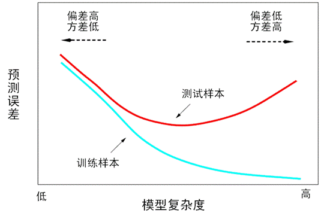
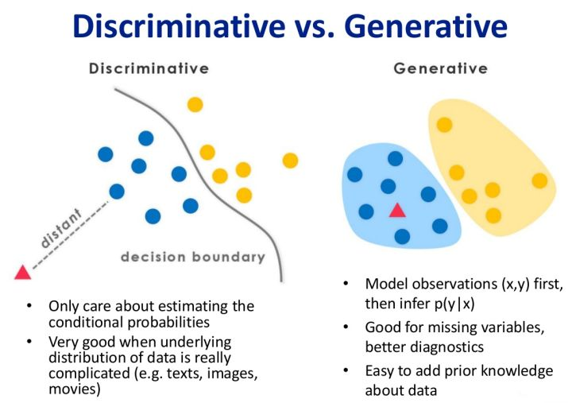

开始前： 该系列内容是我在学习《统计学习方法》（第2版）-李航著时所做的笔记。我努力搞清楚了书中绝大部分算法的原理和每一步的推导过程，对其中部分的算法还用 Python 进行了实现。
除此之外，在记录的过程中，我还对关键的地方加上了我自己的理解，包括文字、公式推导和图表等，以及添加了从其它地方的找来的相关的资料来进行辅助理解。
文中的公示都用 tex 格式进行了记录。尽管我非常追求所记笔记的整洁美好程度，但由于时间紧迫，这是在学习过程中记录的第一版，还没来得及进行详细的校对和修改。先找到工作，然后找时间细细整理。
统计学习的对象是数据。它从数据出发，提取数据特征，抽象出数据的模型，发现数据中的知识，又回到对数据的分析与预测中去。
统计学习由监督学习、非监督学习、半监督学习和强化学习等组成。
监督学习可以概括为：从给定的、有限的、用于学习的训练数据集合出发，假设数据是独立同分布的产生的；并且假设要学习的模型数据某个函数的集合，称为假设空间；应用某个评价准则，从假设空间中选取一个最优的模型，使它对已知训练数据及未知测试数据在给定的评价准则下有最优的预测；最优模型的选取由算法实现。
实现统计学习方法的步骤如下：
在监督学习中，将输入与输出所有可能取值的集合分别称为输入空间与输出空间。
每个具体的输入是一个实例，通常由特征向量表示。这时，所有特征向量存在的空间称为特征空间。特征空间的每一维对应于一个特征。有时假设输入空间与特征空间为相同的空间，对它们不予区分；有时假设输入空间与特征空间为不同的空间，将实例从输入空间映射到特征空间。模型实际上都是定义在特征空间上的。
一般输入空间就是特征空间，但是有时候两者并不相同；如输入是 x，但想要使用（x2， x3）等作为特征输入。
输入与输出对又称为样本或样本点。
输入变量与输出变量有不同的类型，可以是连续的，也可以是离散的。人们根据输入、输出变量的不同类型，对预测任务给予不同的名称：输入变量与输出变量均为连续变量的预测问题称为回归问题；输出变量为有限个离散变量的预测问题称为分类问题；输入变量与输出变量均为变量序列的预测问题称为标注问题。
监督学习的目的在于学习一个由输入到输出的映射，这一映射由模型来表示。换句话说，学习的目的就在于找到最好的这样的模型。模型属于由输入空间到输出空间的映射的集合，这个集合就是假设空间。假设空间的确定意味着学习范围的确定。
监督学习的模型可以是概率模型或非概率模型，由条件概率分布 或决策函数 表示，随具体学习方法而定。对具体的输入进行相应的输出预测时候，写作 或 。
统计学习方法是由模型、策略和算法构成的。
非监督学习、强化学习也同样拥有这三要素。可以说构建一种统计学习方法就是确定具体的统计学习三要素。
统计学习首要考虑的问题是学习什么样的模型。在监督学习过程中，模型就是所要学习的条件概率分布或决策函数。模型的假设空间包含所有可能的条件概率分布或决策函数。例如，假设决策函数是输入变量的线性函数，那么模型的假设空间就是所有这些线性函数构成的集合。假设空间中的模型一般有无穷多个。
有了模型的假设空间，统计学习接着需要考虑的是按照什么样的准则学习或选择最优的模型。统计学习的目标在于从假设空间中选取最优模型。
损失函数是 f(X) 和 Y 的非负实值函数，记作 L(Y, f(X))。
统计学习常用的损失函数有以下几种：
平方损失对差值比较大的值更加敏感一些。
（这里，对应的对数是负值，所以对数损失中包含一个负号，为什么不是绝对值？因为肯定是负的。）
风险函数（损失函数的期望）：
学习的目标就是选择期望风险最小的模型。但是由于联合分布 P(X, Y) 是未知的，Rexp(f) 不能直接计算。
这里的 P(X, Y) 并不是训练集数据中的所有样本对应的概率（出现的概率），这个其实是可以求出来的；这里的 P(X, Y) 是对于所有的数据（就是不仅是现在可以看到的训练集中的数据，还有你现在看不到的、拿不到的未知的数据——出现的概率），所以这个 P(X, Y) 是未知的；如果已经知道了，那也就不需要进行训练找模型了，因为已经找到了。
在进行下面的内容（引出经验风险）之前，先插入如下的几个基础概念：
例如，掷一枚公平的六面骰子，其每次“点数”的期望值是3.5，计算如下：
接上叙述，这里给出经验风险（经验损失）的定义：
由于 P(X, Y) 是没办法知道的，所以期望风险 Rexp(f) 也就没办法直接求得。所以在这里可以考虑下大数定理，当样本容量 N 趋向于无穷的时候，经验风险 Remp(f) 就会趋向于期望风险 Rexp(f)。所以一个很自然的想法是用经验风险估计期望分险。但是，由于现实中训练样本的数目有限，甚至更小，所以用经验风险估计期望风险常常并不理想，要对经验风险进行一定的矫正。** 这就涉及到监督学习的两个基本策略：经验风险最小化和结构风险最小化。
（至此，可以大概理一下思路，就是：损失函数定义单次预测的好坏，期望风险是损失函数对于所有“数据”的加权平均；但是由于不能求得所有“数据”出现的概率，所以风险函数就没办法直接求得，所以就用经验风险来“估计”期望风险（利用大数定理）。但是用这种方法进行“估计”是有一定误差/问题的，所以就引出经验风险最小化和结构风险最小化。）
损失函数、风险函数、经验风险、期望风险：
损失函数： 损失函数（代价函数）度量模型一次预测的好坏，风险函数度量平均意义下模型预测的好坏。
风险函数（期望风险）： 风险函数（期望损失、期望风险）是损失函数的期望值（平均值）。学习的目标就是选择期望风险最小的模型。
经验风险： 模型关于训练数据集的平均损失称为经验风险（经验损失）。
经验风险与期望风险的区别：
期望风险是模型关于联合分布的期望损失，经验风险是模型关于训练样本集的平均损失。
当样本容量趋向于无穷大时，经验风险趋向于期望风险。所以一个很自然的想法是用经验风险估计期望分险。但是，由于现实中训练样本的数目有限，甚至更小，所以用经验风险估计期望风险常常并不理想，要对经验风险进行一定的矫正。 这就涉及到监督学习的两个基本策略：经验风险最小化和结构风险最小化。
经验风险最小化：
当样本量足够大时，经验风险最小化能保证有很好的学习效果，在现实中被广泛采用。比如，极大似然估计就是经验风险最小化的一个例子。当模型是条件概率分布，损失函数是对数损失函数时，经验分线最小化就等价于极大似然估计。
但是，当样本量很小时，就容易产生过拟合现象。
结构风险最小化：
结构风险最小化是为了防止过拟合而提出来的策略。结构风险最小化等价于正则化。结构风险在经验风险上加上表示模型复杂度的正则化项或罚项。
为模型复杂度, 是系数，用以权衡经验风险和模型复杂度。结构化风险需要经验风险与模型复杂度同时小。
贝叶斯估计中的最大后验概率估计就是结构化风险最小化的一个例子。当模型是条件概率分布、损失函数是对数损失函数、模型复杂度由模型的先验概率表示时，结构风险最小化就等价于最大后验概率估计。
结构风险最小化的策略认为结构风险最小的模型时最优的模型。所以求最优模型，就是求解最优化问题：
这样，监督学习问题就变成了经验风险函数或结构风险函数的最优化问题。这时经验风险函数或结构风险函数是最优化的目标函数。
算法是指学习模型的具体计算方法。统计学习基于训练数据集，根据学习策略，从假设空间中选择最优模型，最后需要考虑用什么样的计算方法求解最优模型。
这时，统计学习问题归结为最优化问题，统计学习的算法成为求解最优化问题的算法。如果最优化问题有显式的解析解，这个最优化问题就比较简单。但通常解析解不存在，这就需要用数值计算的方法求解。如何保证找到全局最优解，并使求解的过程非常高效，就成为一个重要问题。统计学习可以利用已有的最优化算法，有时也需要开发独自的最优化算法。
统计学习方法之间的不同，主要来自其模型、策略、算法的不同。确定了模型、策略、算法，统计学习的方法也就确定了。这就是将其称为统计学习三要素的原因。
统计学习的目的是使学到的模型不仅对已知的数据而且对未知数据都能有很好的预测能力。不同的学习方法会给出不同的模型，当损失函数给定时，基于损失函数的训练误差(training error)和模型的测试误差(test error)就成为学习方法评估的标准。需要注意的是，统计学习方法具体采用的损失函数未必是评估时所使用的损失函数，当然，两者一致是比较理想的。
假设学习到的模型是 ，训练误差是模型 关于训练数据集的平均损失:
其中 𝑁 是训练样本容量。
测试误差是模型 关于测试数据集的平均损失:
其中 𝑁′ 是测试样本容量。
训练误差的大小，对判定给定的问题是不是一个容易学习的问题是有意义的，但本质上不重要。通常将学习方法对未知数据的预测能力称为泛化能力(generalization ability)。
过拟合是指学习时选择的模型所包含的参数过多，以致于出现这一模型对已知数据预测的很好，但对未知数据预测的很差的现象。可以说模型选择旨在避免过拟合并提高模型的预测能力。
训练误差与测试误差与模型复杂度的关系：

下面介绍两种常用的模型选择方法:正则化与交叉验证。
模型选择的典型方法是正则化(regularization)。正则化是结构风险最小化策略的实现，是在经验风险上加一个正则化项(regularizer)或罚项(penalty term)。正则化项一般是模型复杂度的单调递增函数，模型越复杂，正则化值就越大。
正则化一般具有如下的形式:
其中第一项是经验风险，第二项是正则化项，𝜆≥0 为调整两者之间关系的系数。
正则化的作用是选择经验风险与模型复杂度同时较小的模型。正则化符合奥卡姆剃刀原理(Occam's razor)，奥卡姆剃刀原理应用于模型选择时变为以下的想法:在所有可能选择的模型中，能够很好地解释已知数据并且十分简单才是最好的模型。
另一种常见的模型选择方法是交叉验证(cross validation)。
如果给定的样本数据充足，进行模型的选择的一种简单方法是随机地将数据集合切分成三部分，分别为训练集(training set)、验证集(validation set) 和 测试集(test set)。训练集用来训练模型，验证集用于模型的选择，而测试集用于最终对学习方法的评估。在学习到的不同复杂度的模型中，选择对验证集有最小预测误差的模型。
但是，在许多实际应用中数据是不充足的。为了选择好的模型，可以采用交叉验证的方式。交叉验证的基本思想是重复地使用数据；把给定的数据进行切分，将切分的数据集组合为训练集与测试集，在此基础上反复地进行训练、测试以及模型选择。
简单交叉验证的方法是：首先随机地将已给数据分为两部分，一部分作为训练集，另一部分作为测试集（例如，70% 的数据为训练集，30% 的数据为测试集），然后用训练集在各种条件下（例如，不同的参数个数）训练模型，从而得到不同的模型，在测试集上评价各个模型的测试误差；接着，我们再把样本打乱，重新选择训练集和测试集，继续训练数据和检验模型。最后我们选择损失函数评估最优的模型和参数。
应用最多的是 S 折交叉验证(S-fold cross validation)，方法如下：首先随机地将已给数据切分为 S 个互不相交的大小相同的子集，然后利用 S-1 个子集的数据训练模型，利用余下的子集测试模型；将这一过程对可能的 S 中选择重复进行；最后选出 S 次评测中平均测试误差最小的模型。
留一交叉验证（Leave-one-out Cross Validation），它是第二种情况的特例，此时 S 等于样本数 N，这样对于 N 个样本，每次选择 N-1 个样本来训练数据，留一个样本来验证模型预测的好坏。此方法主要用于样本量非常少的情况，比如对于普通适中问题，N 小于 50 时，一般可以考虑采用留一交叉验证。
通过反复的交叉验证，用损失函数来度量得到的模型的好坏，最终我们可以得到一个较好的模型。那这三种情况，到底我们应该选择哪一种方法呢？一句话总结，如果我们只是对数据做一个初步的模型建立，不是要做深入分析的话，简单交叉验证就可以了。否则就用S折交叉验证。在样本量少的时候，使用S折交叉验证的特例留一交叉验证。
此外还有一种比较特殊的交叉验证方式，也是用于样本量少的时候。叫做自助法(bootstrapping)。比如我们有m个样本（m较小），每次在这m个样本中随机采集一个样本，放入训练集，采样完后把样本放回。这样重复采集m次，我们得到m个样本组成的训练集。当然，这m个样本中很有可能有重复的样本数据。同时，用原始的m个样本做测试集。这样接着进行交叉验证。由于我们的训练集有重复数据，这会改变数据的分布，因而训练结果会有估计偏差，因此，此种方法不是很常用，除非数据量真的很少，比如小于20个。
学习方法的泛化能力(generalization ability)是指由该方法学习到的模型对未知数据的预测能力，是学习方法本质上重要的性质。
现实中采用最多的办法是通过测试误差来评价学习方法的泛化能力。但这种评价是依赖于测试数据集的。因为测试数据集是有限的，很有可能由此得到的评价结果是不可靠的。统计学习理论试图从理论上对学习方法的泛化能力进行分析。
泛化误差的定义：如果学到的模型是 ，那么用这个模型对未知数据预测的误差即为泛化误差(generalization error)：
泛化误差反映了学习方法的泛化能力，如果一种方法学习的模型比另一种方法学习的模型具有更小的泛化误差，那么这种方法就有效。事实上，泛化误差就是所学习到的期望风险。
学习方法的泛化能力分析往往是通过研究泛化误差的概率上界进行的，简称为泛化误差上界(generalization error bound)。具体来说，就是通过比较两种泛化误差上界的大小来比较它们的优劣。泛化误差上界通常具有以下性质：它是样本容量的函数，当样本容量增加时，泛化上界趋于0；它是假设空间容量的函数，假设空间越大，模型就越难学，泛化误差上界就越大。
相关证明详见书籍。
监督学习又可以分为生成方法(generative approach)和判别方法(discriminative approach)，所学到的模型分别称为生成模型(generative model)和判别模型(discriminative model)。
生成方法 由数据学习联合概率分布 𝑃(𝑋,𝑌)，然后求出条件概率分布 𝑃(𝑌‖𝑋) 作为预测的模型，即生成模型:
这样的方法之所以称为生成方法，是因为模型表示了给定输入 X 产生输出 Y 的生成关系。典型的生成模型有：朴素贝叶斯法和隐马尔科夫模型。
判别方法 由数据直接学习决策函数 𝑓(𝑋) 或者条件概率分布 𝑃(𝑋‖𝑌) 作为预测的模型，即判别模型。典型的判别模型包括：k 近邻法、感知机、决策树、逻辑斯蒂回归模型、最大熵模型、支持向量机、提升方法和条件随机场等。
在监督学习中，生成方法和判别方法各有优缺点，适合于不同条件下的学习问题。
生成方法的特点： 生成方法可以还原出联合概率分布 P(X, Y)，而判别方法则不能；生成方法的学习收敛速度更快，即当样本容量增加的时候，学到的模型可以更快地收敛于真实模型；当存在隐变量时，仍可以用生成方法学习，此时判别方法就不能用。
判别方法的特点： 判别方法直接学习的是条件概率 P(Y|X)或决策函数 f(X)，直接面对预测，往往学习的准确率更高；由于直接学习 P(Y|X) 或 f(X)，可以对数据进行各种程度上的抽象、定义特征并使用特征，因此可以简化学习问题。
生成模型和判别模型的区别：

其实机器学习的任务是从属性 X 预测标记 Y，即求概率 P(Y|X)。
对于判别式模型来说求得 P(Y|X)，对未见示例 X，根据 P(Y|X) 可以求得标记 Y，即可以直接判别出来，如上图的左边所示，实际是就是直接得到了判别边界，所以传统的、耳熟能详的机器学习算法如线性回归模型、支持向量机 SVM 等都是判别式模型，这些模型的特点都是输入属性X可以直接得到Y（对于二分类任务来说，实际得到一个 score，当 score 大于 threshold 时则为正类，否则为反类）（根本原因个人认为是对于某示例 X_1，对正例和反例的标记的条件概率之和等于 1，即 P(Y_1|X_1)+P(Y_2|X_1)=1）。
而生成式模型求得 P(Y,X)，对于未见示例 X，你要求出 X 与不同标记之间的联合概率分布，然后大的获胜，如上图右边所示，并没有什么边界存在，对于未见示例（红三角），求两个联合概率分布（有两个类），比较一下，取那个大的。机器学习中朴素贝叶斯模型、隐马尔可夫模型 HMM 等都是生成式模型，熟悉 Naive Bayes 的都知道，对于输入 X，需要求出好几个联合概率，然后较大的那个就是预测结果（根本原因个人认为是对于某示例 X_1，对正例和反例的标记的联合概率不等于 1，即 P(Y_1,X_1)+P(Y_2,X_1)<1，要遍历所有的 X 和 Y 的联合概率求和，即 sum(P(X,Y))=1）。
一个例子：
判别式模型举例：要确定一个羊是山羊还是绵羊，用判别模型的方法是从历史数据中学习到模型，然后通过提取这只羊的特征来预测出这只羊是山羊的概率，是绵羊的概率。
生成式模型举例：利用生成模型是根据山羊的特征首先学习出一个山羊的模型，然后根据绵羊的特征学习出一个绵羊的模型，然后从这只羊中提取特征，放到山羊模型中看概率是多少，在放到绵羊模型中看概率是多少，哪个大就是哪个。
细细品味上面的例子，判别式模型是根据一只羊的特征可以直接给出这只羊的概率（比如logistic regression，这概率大于0.5时则为正例，否则为反例），而生成式模型是要都试一试，最大的概率的那个就是最后结果~
在机器学习中任务是从属性X预测标记Y，判别模型求的是P(Y|X)，即后验概率；而生成模型最后求的是P(X,Y)，即联合概率。从本质上来说：
判别模型之所以称为“判别”模型，是因为其根据X“判别”Y；
而生成模型之所以称为“生成”模型，是因为其预测的根据是联合概率P(X,Y)，而联合概率可以理解为“生成”(X,Y)样本的概率分布（或称为 依据）；具体来说，机器学习已知X，从Y的候选集合中选出一个来，可能的样本有(X,Y_1), (X,Y_2), (X,Y_3),……，(X,Y_n),实际数据是如何“生成”的依赖于P(X,Y)，那么最后的预测结果选哪一个Y呢？那就选“生成”概率最大的那个吧~
分类是监督学习的一个核心问题。在监督学习中，当输出变量Y取有限个离散值时，预测问题便成为分类问题。这时，输入变量X可以是离散的，也可以是连续的。监督学习从数据中学习一个分类模型或分类决策函数，称为分类器(classifier)。
评价分类器性能的指标一般是分类准确率，其定义是：对于给定的测试数据集，分类器正确分类的样本数与总体样本数之比，也就是损失函数是 0-1 损失时测试数据集上的准确率。
对于二类分类问题常用的评价指标是精确率(precision)与召回率(recall)。分类器在测试数据集上的预测或正确或不正确，4 种情况出现的总数分别记作:
精确率定义为:
召回率定义为：
此外，还有 𝐹 值，是精确率和召回率的调和均值，即：
精确率和召回率都高时，𝐹 值也会高。
标注（tagging）也是一个监督学习问题，可以认为标注问题是分类问题的一个推广，标注问题又是更复杂的结构预测问题的简单形式。
标注问题的输入是一个观测序列，输出是一个标记序列或状态序列。标注问题的目标在于学习一个模型，使它能够对观测序列给出标记序列作为预测。注意，可能的标记个数是有限的，但其组合所城的标记序列的个数是依序列长度呈指数级增长的。
评价标注模型的指标与评价分类模型的指标一样，常用的标注精确率和召回率。其定义与分类模型相同。
标注常用的统计学习方法有:隐马尔科夫模型、条件随机场。
回归用于预测输入变量(自变量)和输出变量(因变量)之间的关系，特别是当输入变量的值发生变化时，输出变量的值随之发生的变化。回归模型正是表示从输入变量到输出变量之间映射的函数。回归问题的学习等价于函数拟合：选择一条函数曲线使其很好地拟合已知数据且很好地预测未知数据。
回归问题按照输入变量的个数，分为一元回归和多元回归；按照输入变量和输出变量之间关系的类型即模型的类型，分为线性回归和非线性回归。
回归学习最常用的损失函数是平方损失函数，在此情况下，回归问题可以由著名的最小二乘法(least squares)求解。